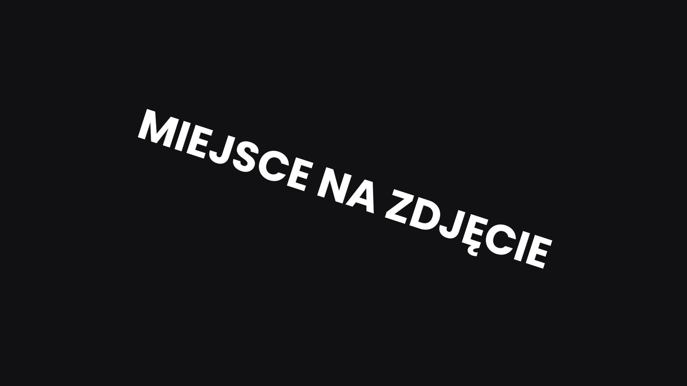

Moje Usługi
Dostosowane rozwiązania fotograficzne, aby uchwycić Twoje najcenniejsze chwile i kluczowe projekty.
Pakiety Fotograficzne
Śluby
Od kameralnych ceremonii po wielkie uroczystości – uchwycam każdą cenną chwilę Twojego wyjątkowego dnia z elegancją i emocjami.
- Całodzienne pokrycie
- Sesja narzeczeńska wliczona
- Galeria online i spersonalizowany album
- Pliki cyfrowe w wysokiej rozdzielczości
Portrety
Uchwycenie indywidualnej osobowości, więzi rodzinnych lub profesjonalnych zdjęć biznesowych z autentycznym i artystycznym akcentem.
- Sesja 1-2 godziny
- Wybrana lokalizacja (Opole i okolice)
- Zmiana stylizacji
- Retuszowane zdjęcia cyfrowe
Wydarzenia i Komercja
Dokumentowanie wydarzeń firmowych, premier produktów lub tworzenie efektownych zdjęć brandingowych dla firm.
- Cennik godzinowy / projektowy
- Indywidualny brief i rozwój koncepcji
- Prawa do użytkowania dostosowane do potrzeb
- Opcje szybkiej realizacji
Szczegółowy Opis Mojej Oferty

Fotografia Ślubna i Elopementowa
Dzień Twojego ślubu to mozaika ulotnych chwil, wzruszających emocji i pięknych detali. Specjalizuję się w uchwytywaniu tej wyjątkowej historii za pomocą reporterskiego, a jednocześnie artystycznego podejścia, dbając o to, aby każde spojrzenie, każdy śmiech i każda łza zostały zachowane. Moim celem jest dostarczenie ponadczasowej kolekcji obrazów, które będziecie pielęgnować przez pokolenia, odzwierciedlających prawdziwą esencję Waszej miłości. Pakiety można dostosować do konkretnych potrzeb, niezależnie od tego, czy jest to intymny elopement, czy wielka uroczystość w Opolu i poza nim.
Portrety Osobiste i Rodzinne
Od żywych portretów indywidualnych, które uchwycą Twój unikalny ducha, po wzruszające zdjęcia rodzinne, które opowiadają Twoją historię – moje sesje portretowe są zaprojektowane tak, aby były relaksujące i przyjemne. Pracuję z naturalnym światłem i autentycznymi ustawieniami, dążąc do tworzenia obrazów, które są prawdziwe, piękne i naprawdę odzwierciedlają to, kim jesteś. Obejmuje to fotografię ciążową, noworodkową, dziecięcą i zwierząt domowych, wszystko dostosowane do Twojej wizji.
Wydarzenia, Branding i Komercja
Dla firm i organizacji kluczowe są przekonujące wizualizacje. Oferuję kompleksową obsługę fotograficzną wydarzeń, takich jak konferencje, gale i spotkania firmowe, zapewniając dokumentację każdej ważnej chwili. Dla potrzeb brandingowych i komercyjnych tworzę wysoce efektowne obrazy, które podnoszą prestiż Twojej marki, od fotografii produktów i zdjęć architektury po profesjonalne portrety biznesowe i zdjęcia zespołów, które rezonują z Twoją grupą docelową.
Często Zadawane Pytania
W przypadku ślubów zalecam rezerwację z 6-12 miesięcznym wyprzedzeniem, zwłaszcza w szczycie sezonu. Dla portretów i wydarzeń 2-3 miesiące to zazwyczaj wystarczająco, ale zapraszam do kontaktu w przypadku krótszych terminów!
Mój styl to połączenie artystycznego reportażu i nowoczesnej fotografii artystycznej. Uwielbiam uchwycać spontaniczne, autentyczne chwile, jednocześnie delikatnie kierując do pięknie skomponowanych portretów. Moje podejście do edycji skłania się ku naturalnym, ciepłym tonom z ponadczasowym wyczuciem.
Oczywiście! Chociaż mieszkam w Opolu, jestem dostępny/a do rezerwacji na terenie całej Polski i za granicą. Mogą obowiązywać opłaty za podróż, w zależności od lokalizacji. Proszę o kontakt w celu uzyskania indywidualnej wyceny.
Wszystkie zdjęcia dostarczane są za pośrednictwem spersonalizowanej, bezpiecznej galerii online. Z niej możesz przeglądać, pobierać zdjęcia w wysokiej rozdzielczości, udostępniać je znajomym i rodzinie, a nawet zamawiać profesjonalne wydruki bezpośrednio.